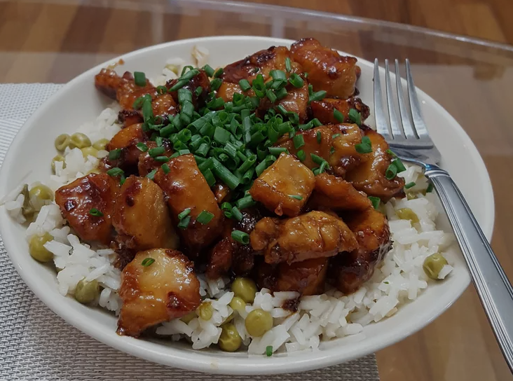

Honey Chicken

A tasty chicken dish!
This light and tasty dish is relatively easy to prepare and will not take up too much of your time.
Slightly sweet chicken and aromatic rice make for a delicious even meal.
Ingredients:
- 1/4 cup honey
- 2 tablespoons soy sauce
- 1/4 teaspoon red pepper flakes
- 1 1/2 tablespoons olive oil
- 2 skinless, boneless chicken breast halves, cut into bite sized pieces
Directions:
- Gather all ingredients.
- Whisk honey, soy sauce and red pepper flakes in a bowl then set aside.
- Heat olive oil in a skillet over medium heat; cook and stir chicken in hot oil until lightly brown. Around 5 minutes.
- Pour the honey mixture into the skillet; continue to cook and stir until chicken is no longer pink in the center and sauce is thickened. About 5 more minutes.
- Serve over freashly cooked rice. Add some cilantro, enjoy!